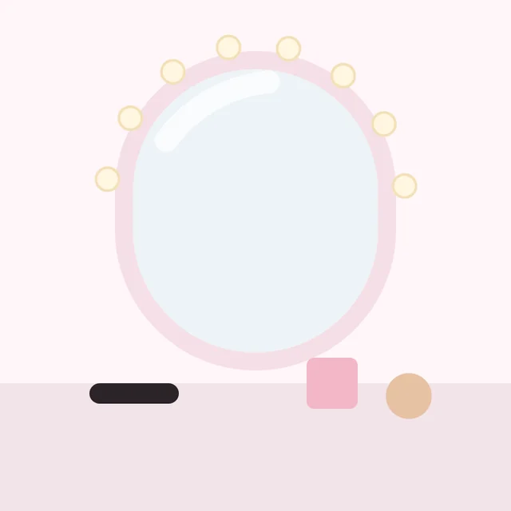
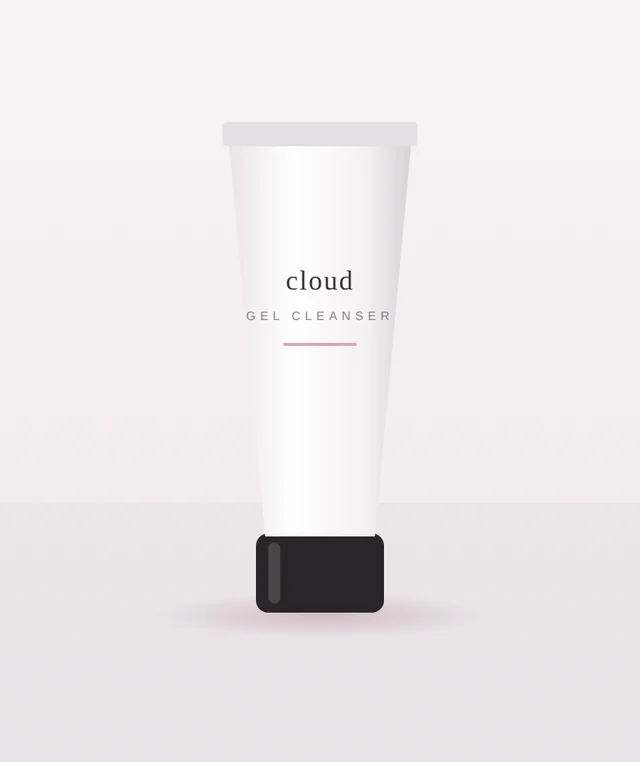
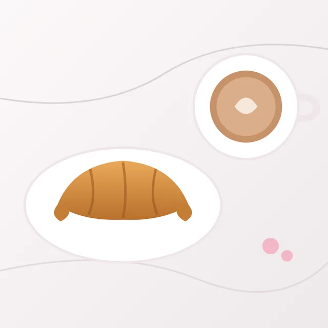
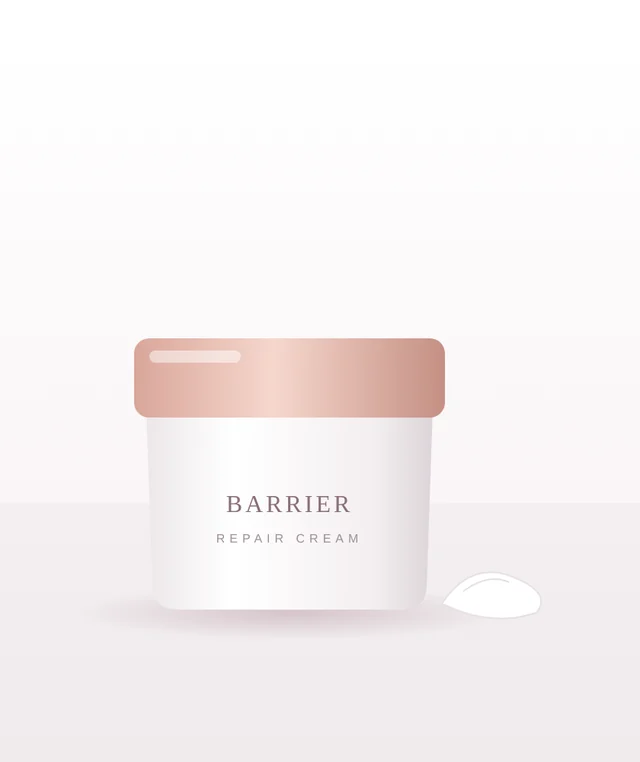
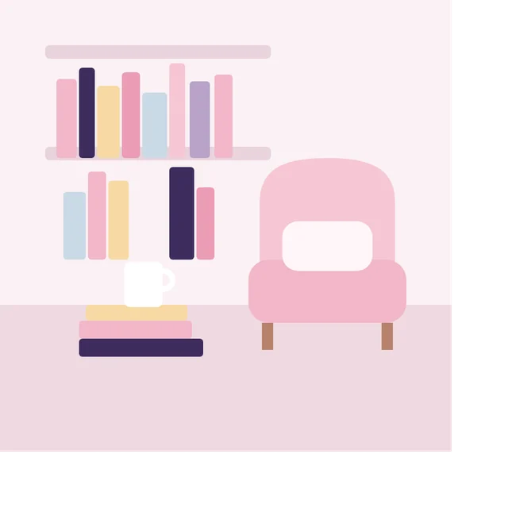
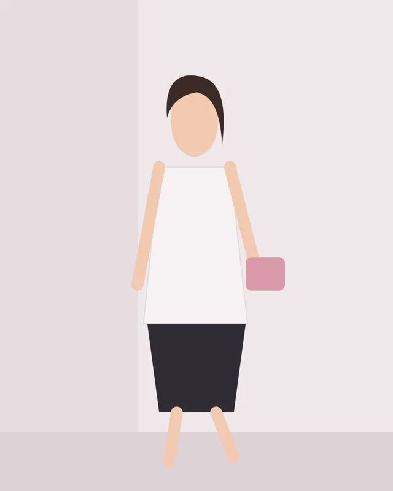

Beauty, vision and self-care guides
Practical, gentle guides for organizing your beauty shelf, creating vision boards, building routines and growing into your next era.


All articles

How to organize makeup so you actually use it
A practical guide to organizing your makeup: edit your collection, group products by how you use them, store them well and keep track of what you reach for.
Read more
How to organize your skincare products (and finally use them up)
Learn how to organize skincare products by routine, track opened dates, avoid wasting serums and build a shelf that makes your morning and evening routines easy.
Read more
How to create a beauty wishlist that helps you buy better
A beauty wishlist turns impulse buys into considered choices. Here is how to build one, organize it into lists and decide what really deserves a place on your shelf.
Read more
Vision board ideas for every part of your life
Vision board ideas for travel, career, home, health, beauty and personal growth, with what to include on each board and how to keep it meaningful.
Read more
How to create an aesthetic moodboard
Learn how to create an aesthetic moodboard: define a feeling, build a colour palette, mix images and textures and use your board to make better choices.
Read more
A gentle morning self-care routine you can keep
Build a morning self-care routine that fits real life: a gentle 15-minute plan covering hydration, movement, skincare and a moment of reflection.
Read more
A simple evening skincare routine, step by step
A simple evening skincare routine in the right order: remove makeup, cleanse, treat and moisturize, plus tips for exfoliating and introducing actives safely.
Read more
How to start journaling when you do not know what to write
How to start journaling with no pressure: simple formats, beginner prompts and ways to make writing a gentle daily habit you look forward to.
Read more
Personal goal setting that feels kind, not pressured
A gentle approach to personal goal setting: choose fewer goals, make them specific, break them into small steps and track progress without burning out.
Read more
How to build better daily habits, gently
How to build better daily habits that last: start tiny, link habits to your routine, design your space and be kind to yourself when you miss a day.
Read more
A personal reset routine for when everything feels like too much
A personal reset routine for overwhelming weeks: reset your space, your body, your mind and your plans in a few calm, manageable steps.
Read moreNo other articles in this category yet. The featured guide above may be what you are looking for.
Put the guides into practice.
SOVELLIQUE keeps your shelf, boards, rituals and journal together, so good intentions become everyday habits.